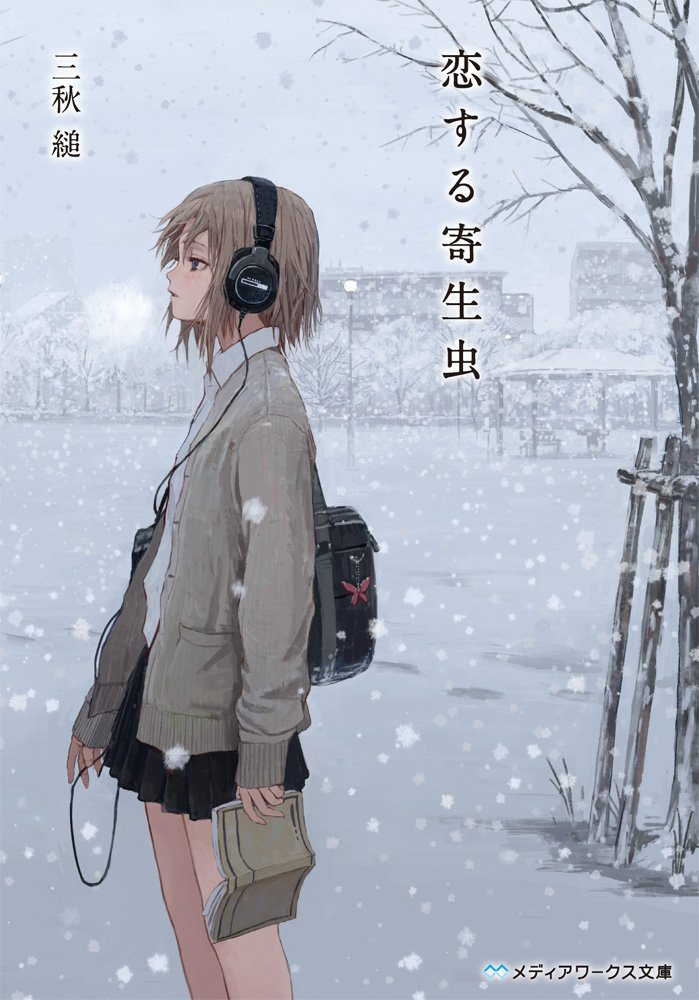

石川啄木は日本の俳人、詩人。明治時代から大正時代にかけて活躍しました。「啄木」の意味を込めた石川啄木の詩は、自然や人間ドラマを深く描いています。彼の詩は、美しい言葉と美しいイメージを持ち、深い意味を持っています。
また、彼は日本文学史上重要な詩人の一人とされています。
三秋縋

1990年、岩手生まれ。「げんふうけい」名義でウェブ上に小説を発表して人気を博し、2013年に『スターティング・オーヴァー』
で作家デビュー。主な著作に『三日間の幸福』『いたいのいたいの、とんでゆけ』『恋する寄生虫』（いずれもメディアワークス文庫）など。
i